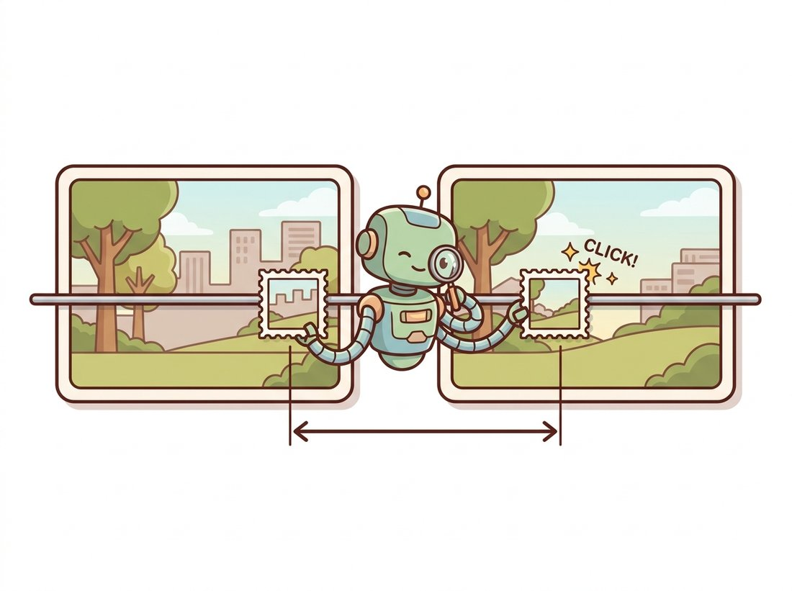

"I compare a million pixels against a million pixels before breakfast, and all I ask in return is that somebody straightens the epipolar lines first. I match along rows. I do not do diagonals. Have some respect."
An Uncompromisingly Horizontal Block Matcher
Dense stereo splits into a geometry problem that is solved once (warp both images so corresponding points share a row) and a matching problem that is solved per pixel (find each pixel's partner along its row, and call the column shift its disparity). This section does both. Rectification rotates the two views of Section 13.1 into the side-by-side configuration where epipolar lines are scanlines. Disparity estimation then matches every pixel: naive block matching first, its failures diagnosed second, and semi-global matching (SGM) as the classical production answer. The disparity map this section produces becomes metric depth through one formula in Section 13.5.
Everything so far in this chapter operated on sparse keypoints: a few hundred matches, carefully verified. Applications want more. A robot avoiding obstacles, a car braking for a pedestrian, a phone faking background blur: all need depth at every pixel, which means correspondence at every pixel, including the boring, textureless ones that Chapter 10's detectors deliberately skip. Dense matching is only computationally sane because of the epipolar constraint, and it becomes downright pleasant when the constraint is given its friendliest shape.
1. Rectification: Engineering the Easy Geometry Intermediate
Section 13.1 identified the dream configuration: cameras side by side, optical axes parallel, epipoles at infinity, epipolar lines horizontal and row-aligned. Physical rigs only approximate it; cameras are often slightly verged (angled inward toward each other so their fields of view overlap sooner), and lens distortion and millimeter-level mounting errors leave corresponding points a few rows apart, which is fatal for a matcher that searches only along rows. Rectification fixes this in software: rotate each camera (virtually, by warping its image) about its own optical center until the dream configuration holds exactly. Rotating about the center changes no ray origins, so this is the rotation-only homography of Section 13.3 applied to each image, computed so that both new image planes are coplanar and parallel to the baseline. Figure 13.4.1 shows the before and after.
With calibration from Chapter 12 (intrinsics of both cameras plus the rig's rotation and translation R, T from stereo calibration), OpenCV computes the rectifying rotations and the new projection matrices in one call, and the warps in two more. These maps are computed once per rig and reused for every frame:
# One-time rectification setup for a calibrated stereo rig: turn the rig's
# intrinsics and relative pose into per-pixel warp maps, then verify the
# warp by checking that matched features land on nearly the same row.
import cv2
import numpy as np
# K1, dist1, K2, dist2, R, T come from cv2.stereoCalibrate (Chapter 12)
R1, R2, P1, P2, Q, roi1, roi2 = cv2.stereoRectify(
K1, dist1, K2, dist2, (w, h), R, T,
alpha=0) # alpha=0: crop to valid pixels only
mapLx, mapLy = cv2.initUndistortRectifyMap(K1, dist1, R1, P1, (w, h), cv2.CV_32FC1)
mapRx, mapRy = cv2.initUndistortRectifyMap(K2, dist2, R2, P2, (w, h), cv2.CV_32FC1)
rectL = cv2.remap(imgL, mapLx, mapLy, cv2.INTER_LINEAR) # per-frame, fast
rectR = cv2.remap(imgR, mapRx, mapRy, cv2.INTER_LINEAR)
# sanity check: matched features should now land on (nearly) equal rows;
# on a good calibration the mean row difference is below 0.5 pixels
sift = cv2.SIFT_create(nfeatures=500)
kL, dL = sift.detectAndCompute(rectL, None)
kR, dR = sift.detectAndCompute(rectR, None)
mm = [m for m, n in cv2.BFMatcher(cv2.NORM_L2).knnMatch(dL, dR, k=2)
if m.distance < 0.7 * n.distance]
dy = [abs(kL[m.queryIdx].pt[1] - kR[m.trainIdx].pt[1]) for m in mm]
print(f"mean |row difference|: {np.mean(dy):.2f} px") # e.g. 0.31 pxcv2.stereoRectify returns the virtual rotations R1, R2, new projections P1, P2, and the reprojection matrix Q (saved for Section 13.5), while initUndistortRectifyMap bakes undistortion and rectification into lookup maps that cv2.remap applies to every frame. The SIFT row-difference check at the end is the rectification's acceptance test: a mean below 0.5 px (here 0.31) means epipolar lines are now scanlines.
Two practical notes. The alpha parameter trades field of view against black borders: 0 crops to fully valid pixels, 1 keeps everything. And the returned $Q$ matrix is not rectification's business at all; it is the disparity-to-depth reprojection that Section 13.5 runs on, so keep it. For pairs without calibration, cv2.stereoRectifyUncalibrated computes rectifying homographies from a fundamental matrix (Section 13.2), good enough for visualization though not for metric depth.
2. Disparity, and the Simplest Matcher That Could Work Beginner
On a rectified pair, a scene point projects to $(x_L, y)$ on the left and $(x_R, y)$ on the right, and since the right camera sits to the right, $x_R \le x_L$: everything shifts left, near things more than far things (hold a finger close to your face and alternate eyes). The disparity $d = x_L - x_R \ge 0$ is the entire output of stereo matching: a map of horizontal shifts, large for near pixels, small for far ones, inversely proportional to depth in a way Section 13.5 makes exact.
A disparity map looks like a depth map (bright near, dark far) and is often colorized identically, but the two are reciprocally related, not equal and not even proportional. Disparity is a pixel shift; depth is meters; they are tied by $Z = fB/d$, an inverse relationship, so doubling a pixel's disparity halves its depth rather than doubling it. Treating disparity as depth (feeding raw disparities to an obstacle planner, or averaging disparities to "smooth depth") silently warps the geometry: the same disparity step spans millimeters near the camera and meters far away. Two further traps hide in the same map. Disparity is meaningful only after the rectification of subsection 1, since the shift must be horizontal and row-aligned to mean anything, and the conversion to metric depth requires the calibrated $f$ and baseline $B$ that a bare disparity map does not carry. The disparity map is the raw measurement; the depth map is what Section 13.5 computes from it.
The simplest dense matcher is block matching: for each left pixel, slide a small window along the same row of the right image over a disparity range $[0, d_{\max}]$, score each shift by a dissimilarity such as the sum of absolute differences (SAD), and keep the minimizer (the illustration below shows the slide in action):

$$ d(x, y) \;=\; \arg\min_{d' \in [0, d_{\max}]} \sum_{(u,v) \in W} \big| I_L(x+u,\, y+v) - I_R(x+u-d',\, y+v) \big|. $$
A single pixel carries too little information to match: an 8-bit pixel takes one of 256 gray values, so on a 1000-pixel row roughly four pixels share each value, and matching a lone pixel means choosing among them by coin flip. Hence the window $W$: a $7 \times 7$ patch of those same pixels has $256^{49}$ possible appearances, astronomically more than there are pixels to confuse it with, so the matching unit becomes a neighborhood, on the bet that neighborhoods are distinctive where pixels are not. That bet, and where it loses, structures the rest of the section.
Block matching fails in three canonical places: textureless regions (blank walls: every shift scores alike, the minimum is noise), repetitive structure (fences, brick, racking: several shifts score well, the wrong minimum wins), and occlusions (pixels near depth edges visible to only one camera: the true match does not exist, but the matcher returns a minimum anyway). A fourth, subtler failure is edge fattening: a window straddling a depth boundary contains two motions, and the textured side wins, bleeding foreground disparity into the background.
Every weakness of block matching traces to one root: it decides each pixel independently, trusting the local appearance to be informative. Where appearance is ambiguous (blank, repetitive, or occluded), the local decision is arbitrary, even though the right answer is obvious from context: disparities of neighboring pixels on the same surface vary smoothly. Stereo matching is therefore best treated not as a million independent searches but as one joint labeling problem with a smoothness prior, the same insight that powered the graph-cut segmentation of Chapter 11. Full 2D optimization of that labeling is expensive; the next subsection's algorithm is the field's beloved compromise, and the learned matchers at the frontier are, at heart, neural machinery for propagating exactly this contextual information further.
Ask a block matcher to find a white patch of wall in the other image and it will confidently locate the white patch of wall, and the white patch of wall, and the white patch of wall, all scoring identically, and then pick one at random with the conviction of a coin that has decided to land on its edge. The matcher is not confused; it is correctly reporting that the wall declined to identify itself. This is why stereo measures texture rather than geometry: on a featureless surface there is nothing to disagree about, so there is nothing to match, and the only honest output is a shrug, which is exactly what the uniqueness check downstream teaches it to return.
3. Semi-Global Matching: Smoothness at Scanline Prices Advanced
Semi-global matching (SGM, Hirschmüller 2008) keeps a per-pixel matching cost $C(\mathbf{p}, d)$ but adds a smoothness penalty: a small constant $P_1$ for neighbors whose disparity differs by exactly 1 (sloped surfaces are fine), a larger $P_2$ for jumps greater than 1 (depth discontinuities are allowed but must pay). Minimizing the joint energy over the full 2D grid is NP-hard, but along a single 1D path it is classic dynamic programming. SGM's move: run the 1D optimization along 8 (or 16) directions through each pixel (horizontal, vertical, diagonals), sum the directional costs, and pick each pixel's best disparity from the aggregate. Smoothness information flows in from all around the image at a cost linear in pixels times disparities, and the streaking artifacts of single-direction scanline stereo cancel out across paths.
OpenCV's StereoSGBM ("semi-global block matching") implements a practical variant whose handful of parameters do real work, annotated below. The non-obvious convention: compute returns disparities as 16-bit integers scaled by 16, so divide before use.
# Configure semi-global block matching: each parameter encodes a piece of
# the SGM theory (the P1/P2 smoothness penalties, the uniqueness and
# left-right checks), and compute() returns disparity as int16 scaled by 16.
block = 5
stereo = cv2.StereoSGBM_create(
minDisparity=0,
numDisparities=128, # search range; MUST be divisible by 16.
# ceiling on measurable nearness (Sec 13.5)
blockSize=block, # odd; 3-9: small=detail, large=smooth
P1=8 * 3 * block ** 2, # penalty for |delta d| == 1 (slopes)
P2=32 * 3 * block ** 2, # penalty for jumps; P2 > P1 enforces
# piecewise-smooth surfaces
uniquenessRatio=10, # best cost must beat runner-up by 10%
speckleWindowSize=100, # remove disparity blobs smaller than this
speckleRange=2, # ...if they jump by more than 2 levels
disp12MaxDiff=1, # left-right consistency tolerance (px)
mode=cv2.STEREO_SGBM_MODE_SGBM_3WAY) # faster 3-path aggregation
disp = stereo.compute(rectL, rectR).astype(np.float32) / 16.0
valid = disp > 0 # negative/zero = no reliable match
print(f"valid: {100 * valid.mean():.1f}%, "
f"range: {disp[valid].min():.1f} to {disp[valid].max():.1f} px")
# valid: 91.3%, range: 4.2 to 97.8 pxStereoSGBM_create configuration with the reasoning attached to each parameter: P1 and P2 encode the piecewise-smooth world assumption, uniquenessRatio and disp12MaxDiff discard ambiguous pixels rather than guessing, and the final / 16.0 converts OpenCV's fixed-point output into float disparities. The printed valid fraction (91.3%) and range expose how many pixels survived the quality gates.Before reading on, spend five minutes feeling what two SGBM parameters do. Keep Code Fragment 2 running on one rectified pair and re-run compute after each change, colormapping disp each time. First sweep blockSize through 3, 5, 9, 15: watch fine structure (railings, foliage, the edge of a desk) sharpen at small sizes while noise in flat regions melts away at large ones, the detail-versus-smoothness trade-off made visible in a single dial. Then hold blockSize at 5 and sweep the P2 multiplier (the leading 32) through 8, 32, 128: low values let the surface fragment into staircase patches, high values fuse everything into smooth slabs that swallow thin objects whole. The thing to notice is that neither extreme is "correct"; the best setting depends on whether your scene is a cluttered close-range desk or a long smooth corridor, which is exactly why these are exposed parameters and not hidden constants.
The quality-control parameters deserve emphasis because they implement the failure analysis of subsection 2. uniquenessRatio attacks repetitive structure: if the runner-up disparity scores nearly as well as the winner, the pixel is marked invalid instead of guessed. disp12MaxDiff enforces left-right consistency: matching right-to-left as well, and invalidating pixels whose two answers disagree, which catches most occluded pixels (their two matches land on different surfaces). The speckle filter removes small floating islands of disparity, usually mismatches in low texture. A mature pipeline often adds a weighted-least-squares smoothing pass (cv2.ximgproc.createDisparityWLSFilter in opencv-contrib) that fills the invalidated holes from confident neighbors, guided by the image edges, a direct cousin of the edge-aware filtering in Chapter 7.
From-scratch SGM (cost volume, 8-path dynamic programming, uniqueness and consistency checks, subpixel interpolation) is a 300-plus-line project and a genuinely instructive one, but cv2.StereoBM_create (block matching, hundreds of FPS on VGA) and cv2.StereoSGBM_create (the code above, real-time at moderate resolution) reduce it to one constructor and one compute call each, roughly 150-to-1. Internally they add what a naive implementation forgets: Birchfield-Tomasi sampling-insensitive costs, prefiltering, fixed-point subpixel refinement via parabola fitting of the cost minimum, and SIMD vectorization. The constructor parameters are the SGM theory exposed by name, which is why this section explained them rather than the inner loops.
4. Reading a Disparity Map Like a Professional Intermediate
A disparity map is the most diagnostic image you will ever stare at: every artifact in it names its own cause, and learning to read those tells is the difference between trusting a depth sensor and being surprised by it on the road. Visualize disp with a colormap and inspect it against the failure catalog. Smooth surfaces should show smooth gradients; staircase banding indicates integer disparities (check the divide-by-16 and subpixel settings). A halo of invalid pixels hugging the left side of every foreground object is normal: those are right-camera occlusions, the geometry's fault, not the matcher's. Fat foreground edges that spill onto the background by half a block width are the edge-fattening signature; shrink blockSize or add the WLS filter. And a hard band of garbage along the left image border is the search range itself: a pixel at column $x < d_{\max}$ cannot have its match in view, so the leftmost numDisparities columns are structurally unmatchable. Production rigs simply crop them.
Who: An engineer at a warehouse-automation vendor, owning the stereo obstacle-detection stack on autonomous pallet trucks.
Situation: Trucks used a calibrated stereo pair and SGBM at 720p to detect obstacles in the drive path. Acceptance tests (boxes, cones, people) passed with margins.
Problem: In production, trucks occasionally clipped pallets wrapped in clear plastic shrink-wrap. The disparity maps showed the pallet's load fine but returned invalid or background disparity exactly on large glossy wrap regions: textureless, view-dependent specular highlights gave the matcher nothing consistent to match, and left-right checking (correctly) invalidated the area. The planner treated invalid as free space.
Decision: Two changes. First, the cheap one: invalid disparity regions above a size threshold inside the drive corridor were reclassified as "unknown, slow down" rather than "free", an admission that no answer is information. Second, the rig gained a static texture projector (an IR dot pattern, the active-stereo trick of Section 13.5), giving the matcher artificial texture on optically blank surfaces.
Result: Shrink-wrap incidents went to zero across the next quarter; average speed dropped 2 percent from the new caution rule, recovered after the projector retrofit reduced unknown regions by 80 percent.
Lesson: A disparity map's holes carry meaning. Passive stereo measures texture, not geometry; where the world refuses to be textured, either add texture or make the planner respect ignorance.
Learned stereo replaced the cost-aggregation heart of this section while keeping its rectified-epipolar skeleton. RAFT-Stereo (3DV 2021) made recurrent refinement over a correlation volume the standard template; IGEV-Stereo (CVPR 2023) and its successors fused geometry-encoding volumes into the recurrence; Selective-IGEV (CVPR 2024) routes information adaptively between frequency branches. The 2025 inflection is generalization: FoundationStereo (CVPR 2025), trained on a large synthetic dataset with a vision-foundation-model backbone, reports strong zero-shot generalization across benchmarks such as Middlebury, KITTI, and ETH3D, rivaling per-dataset fine-tuned networks, and DEFOM-Stereo (CVPR 2025) bootstraps the recurrent estimator with a monocular depth foundation model (the Depth Anything lineage of Chapter 27), fusing learned single-image priors with two-view geometry. Notice what survived every revolution: rectification, the disparity parameterization, left-right consistency as a confidence signal, and the benchmarks. The classical scaffolding of this section is the fixed coordinate system in which the learning happens.
Rectification claims that warping with rotation-only homographies ($H = K_{new} R K_{old}^{-1}$, Section 13.3) can align any stereo pair's epipolar geometry. (a) Explain why a warp that corresponds to rotating the camera about its optical center cannot change which scene points are occluded by which, while a warp corresponding to translation would. (b) Identify the one camera configuration from Section 13.1 for which rectification of this kind fails badly, and explain the failure in terms of where the epipole must be sent. (c) Propose what a system observing that configuration (a forward-moving vehicle camera) should use instead of horizontal-disparity stereo.
Implement block matching from scratch as a vectorized cost volume: for a rectified pair (use a Middlebury training pair with ground truth), compute SAD over a $7 \times 7$ window for all disparities in $[0, 64]$ using only NumPy shifts and cv2.boxFilter (no per-pixel Python loops), take the argmin, and add the uniqueness test. Report your error rate (fraction of pixels off by more than 2 from ground truth) and runtime, then compare both against StereoBM and StereoSGBM. Where on the image do your extra errors concentrate, relative to the failure catalog of subsection 2?
Using the section's SGBM configuration on one indoor pair, sweep P2 across $\{4, 8, 16, 32, 64\} \times 3 \cdot \text{block}^2$ while holding P1 fixed, and produce a five-panel figure of the resulting disparity maps. Describe the qualitative transition: what happens to thin structures (chair legs, door frames) at high P2, and to flat walls at low P2? Connect the observed trade-off to the piecewise-smooth prior, and explain why no single P2 can be optimal for both a close-range cluttered desk and a long corridor.